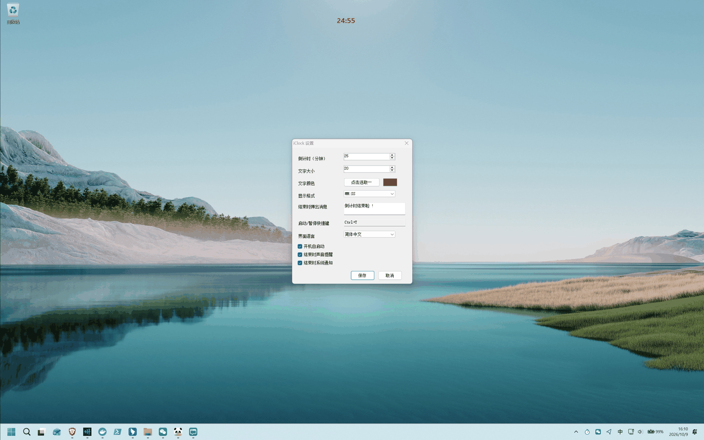

Ready instantly. Quiet enough to leave on. Just 315 KB, RAM under 15 MB. A timer that never gets in the way, a daily quote on your desktop, and agents that meet you there.

Engineered for developers, creators, and power users in deep flow.
Native 32-bit ARGB subpixel anti-aliasing with adaptive drop shadow. 100% click-through never steals focus or blocks clicks; direct Alt+drag repositioning, tray wheel duration tuning, auto-suppression during fullscreen games & presentations. Daily focus goal, in-progress sessions in Today's history, language and auto-start on the tray menu.
Morning unlock appearance, permanently pinned to desktop. Pure event-driven architecture eliminates polling loops. Import AI-generated quote files through the CLI with automatic deduplication.
Automated task completion monitoring for 20+ programming agents. Agents can request human decisions, project task progress, and send completion alerts through the local CLI with structured JSON responses.
Rejecting the dichotomy of crude tools vs bloated 100MB+ Electron apps.
Desktop tools often fall into two extremes: either crude and single-purpose, or bloated 100MB+ Electron packages consuming hundreds of megabytes of RAM and CPU, with telemetry or ads. Opaque windows block your code and workspace.
Engineered on Windows native Win32 and GDI+ APIs with zero external runtimes. Single portable executable with active RAM under 15 MB. Click-through overlay, 0-polling ambient quotes, and CLI agent collaboration.
Side-by-side comparison between native engineering and typical bloatware.
| Core Metric |
🏆 Editor’s Pick · Minimal & Native
⚡ iClock (This Project)
|
Typical Electron Timers | Windows Alarms & Clock | Online Web Timers |
|---|---|---|---|---|
| Binary Size | ⚡ 315 KB (Single Portable File) | 120 MB ~ 250 MB | Pre-installed System App | Several MBs per visit |
| Active RAM | ⚡ ~15 MB (Physical Baseline) | 150 MB ~ 300 MB | ~30 MB | 80 MB ~ 200 MB (Browser Tab) |
| CPU Idle Consumption | ⚡ 0.0% (Heartbeat Aligned) | 0.5% ~ 3.0% (Background Poll) | 0.0% | 0.3% ~ 1.5% |
| Interaction Obstruction | ⚡ True Click-Through, Never Blocks | Opaque Window Blocks Code & Web | Minimized or Fullscreen | Must Switch Out to Browser |
| Agent Desktop Collaboration | ⚡ CLI + structured JSON | ✘ None | ✘ None | ✘ None |
| AI Agents Perception | ⚡ 20+ Coding Agents Monitored | ✘ None | ✘ None | ✘ None |
| Ambient Daily Quotes | ⚡ 0-Polling Floating + AI Expansion | ✘ None | ✘ None | ✘ Web-only |
| Network & Privacy | ⚡ 0 Network Calls, 100% Local | Most ship telemetry & update beacons | Requires a Microsoft online account | Data reported to cloud servers |
100% portable, standalone, zero installation. Compatible with Windows 7 / 8 / 10 / 11.
winget install FrancoDeyvison.iClock
scoop install https://raw.githubusercontent.com/francodeyvison183-collab/iClock/main/scoop/iclock.json
Native Win32 WM_COPYDATA IPC pipeline supporting standalone global terminal calls without .exe.
iclock --install-cli
| Command | Short | Description | Example |
|---|---|---|---|
iclock |
- | Wake or launch background iClock instance | iclock |
iclock --start [minutes] |
iclock -s [m] |
Start focus timer with specified minutes | iclock -s 25 |
iclock --pause |
iclock -p |
Pause current running timer | iclock -p |
iclock --resume |
iclock -r |
Resume paused timer | iclock -r |
iclock --reset |
- | Reset timer to standby and hide overlay | iclock --reset |
iclock -n <message> |
iclock --notice |
Trigger desktop TopMost notification modal & chime | iclock -n "Production build finished!" |
iclock -q |
iclock --quote |
Rotate to next desktop quote randomly | iclock -q |
iclock --help |
iclock -h |
Print command help manual in terminal | iclock -h |
Crafted for deep keyboard focus and natural desktop micro-control.
Blindly start or pause timer over any full-screen app; single left-click tray icon also toggles.
Hold Alt + left-click drag anywhere on the digits or quote to reposition instantly; auto-saves on release.
Hover over tray icon and scroll mouse wheel to adjust duration (±1m); hold Shift for ±5m.
Scale quote font size directly on screen; drag right edge to adjust wrap width; double-click to skip.
Direct answers regarding architecture, click-through behavior, and security.
iClock is 100% free and open-source. If it improves your productivity, support from you is deeply appreciated!
“Thank you for using iClock!” · Every bit of encouragement fuels continuous craftsmanship